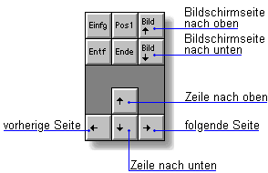
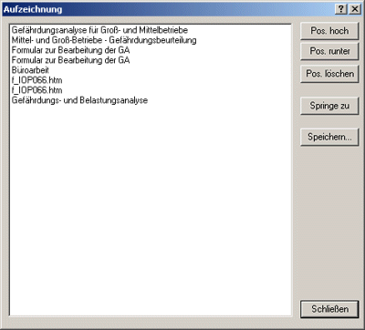

Alle Informationen, Formulare, Vorschriften und Gefährdungsbeurteilungen sind auf mehreren Wegen erreichbar. Verschiedene Funktionen und Programmteile ermöglichen ein effektives Bewegen im Programm.

| Mit dem Menüeintrag Optionen/Bisherige Themen können Sie eine Liste öffnen. | |
| Alle Stellen im Programm, die Sie während der Benutzung besucht haben, sind hier aufgeführt. Ein Doppelklick auf einen bestimmten Eintrag oder ein Mausklick auf die Schaltfläche "Springe zu" genügen, und Sie befinden sich wieder an dieser Stelle. | |
| Mit Lesezeichen können Sie die Stellen im Programm markieren, die Sie häufig benötigen. Im Menüpunkt Lesezeichen werden diese Markierungen aufgelistet. So können Sie ohne Umweg zur gewünschten Information springen, etwa zu einer bestimmten Vorschrift. Die Lesezeichen werden automatisch auf der Festplatte gespeichert. |  |
| Mit Hilfe dieser Funktion können Sie z. B. eine Unterweisung erstellen, oder einen Vortrag vorbereiten. Sie zeichnen dazu eine Serie von Bildschirmmasken als Einzelbilder auf und können sie über Tastendruck wiedergeben. |  |
| Sie können die Reihenfolge und Position der Masken verändern und damit Ihren Vortrag nach der Aufzeichnung bearbeiten. |  |
| Einige Funktionen des Programms können mit der rechten Maustaste aufgerufen werden. Zum Beispiel: Zurück bringt Sie jeweils einen Schritt rückwarts zur letzten besuchten Stelle. Titelseite öffnet die Gewerkeauswahl. Kopieren lädt markierten Text in die Windows-Zwischenablage. Von dort können Sie ihn in Ihre Textverarbeitung hineinkopieren. |
 |
 zu den Hilfethemen
zu den Hilfethemen